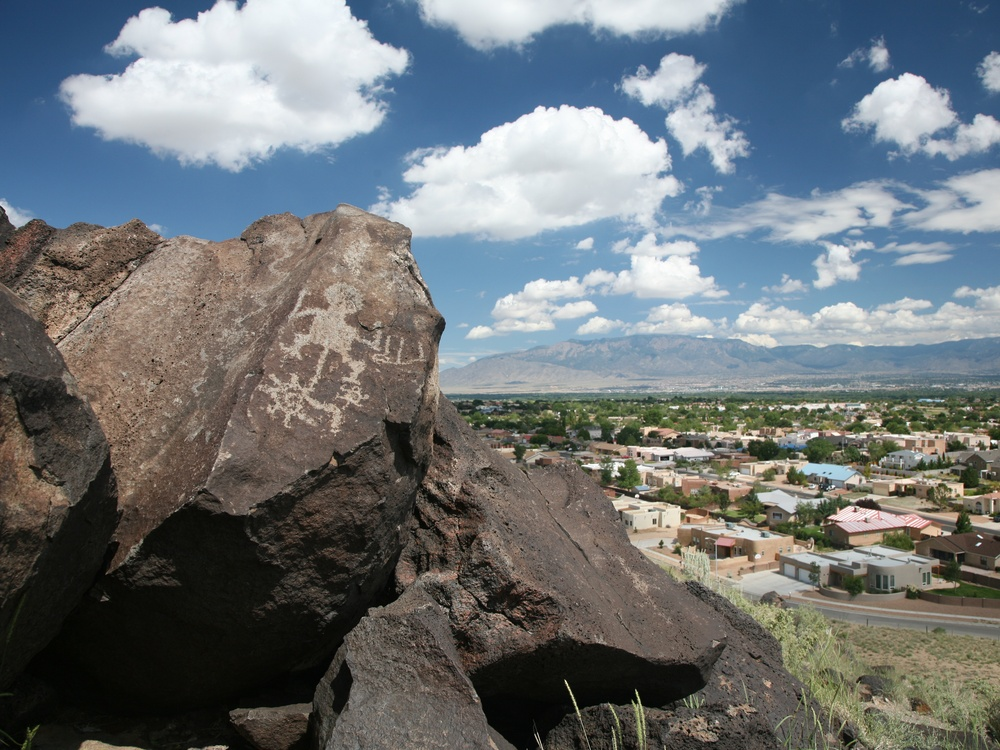
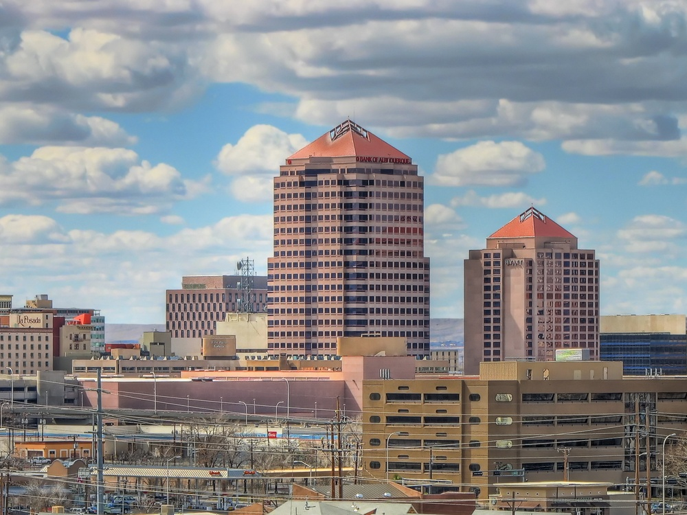
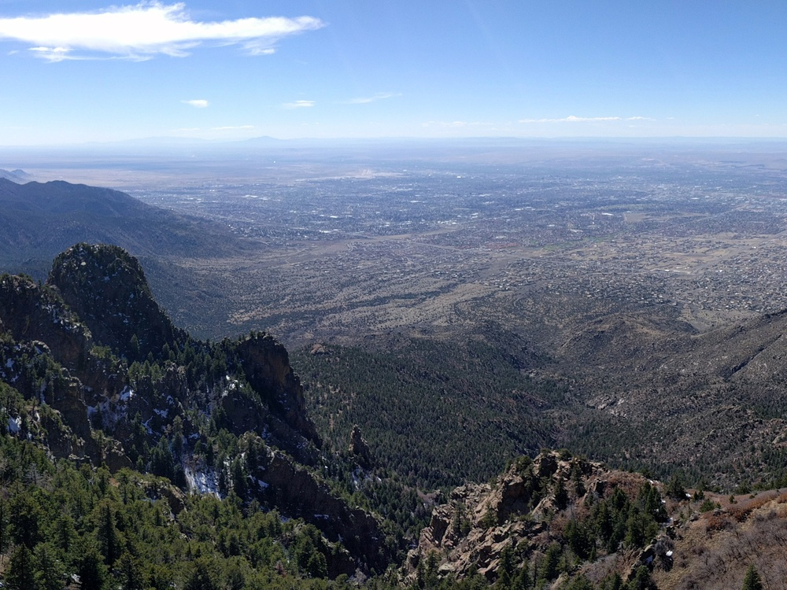
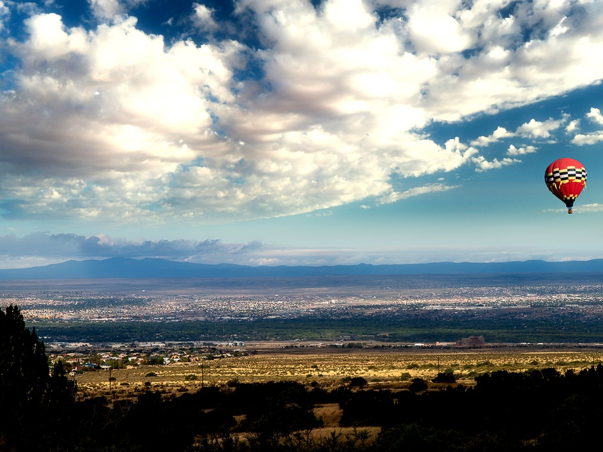

Albuquerque Travel Guide
New Mexico's largest city, Nestled in the high desert, Albuquerque offers a mix of Native American, Hispanic, and Anglo influences that create a distinctive atmosphere. Visitors can explore the historic Old Town with its adobe buildings and charming shops, or take a ride on the Sandia Peak Tramway for breathtaking views of the city and surrounding mountains. The annual Albuquerque International Balloon Fiesta is a must-see event, where hundreds of colorful hot air balloons fill the sky.
Top Locations
Places to See in Albuquerque
AllenS, Public domain, via Wikimedia Commons; Image Size Adjusted
AllenS, Public domain, via Wikimedia Commons; Image Size Adjusted
Greg Goebel, CC BY-SA 2.0, via Wikimedia Commons; Image Size Adjusted

Grinnell Point and Swiftcurrent Lake from the Many Glacier Hotel
Jeff P from Berkeley, CA, USA, CC BY 2.0, via Wikimedia Commons; Image Size Adjusted

Grinnell Point and Swiftcurrent Lake from the Many Glacier Hotel
Jeff P from Berkeley, CA, USA, CC BY 2.0, via Wikimedia Commons; Image Size Adjusted
-400.jpg)

Matt Lavin, CC BY-SA 2.0, via Wikimedia Commons; Image Size Adjusted


.jpg){kind=link}
.jpg){kind=link}

Overview
Albuquerque is the largest city in New Mexico, rising from the high desert at roughly 5,300 feet above sea level along the Rio Grande and beneath the rugged Sandia Mountains. Known for its brilliant sunshine, enormous skies, and sunset-pink mountain views, the city is the cultural and economic heart of the state and a gateway to the American Southwest. It is famous for the Albuquerque International Balloon Fiesta, the largest hot air balloon gathering in the world, for its stretch of historic Route 66, and for its starring role as the setting of the television series Breaking Bad.
Visitors come to Albuquerque for its remarkable blend of Native American, Hispanic, and Anglo cultures, expressed in its adobe architecture, its festivals, and above all its food, with New Mexican red and green chile appearing on nearly every menu. Travelers wander the plazas of Old Town, ride the Sandia Peak Tramway, explore ancient petroglyphs, and hike or bike the river valley, all within a single compact metropolitan area. The city is also a significant center of science and technology, home to the University of New Mexico, Kirtland Air Force Base, and Sandia National Laboratories.
People have lived along this stretch of the Rio Grande for thousands of years, and Ancestral Puebloan communities farmed the fertile valley long before Europeans arrived. Spanish colonists founded the villa of Alburquerque in 1706, naming it for the Duke of Alburquerque, and the settlement grew into an important trading post on the Camino Real. After New Mexico passed to the United States, the arrival of the railroad in 1880 created a new commercial district east of Old Town, and the city boomed again when Route 66 was routed along Central Avenue in 1926. During and after World War II, military research, including work connected to the Manhattan Project, established the nuclear and technology industries that still shape the local economy.
Rising directly east of the city, the Sandia Mountains define Albuquerque's skyline and its identity. The name means "watermelon" in Spanish, a reference to the pink glow the granite cliffs take on at sunset. The range crests at Sandia Crest, which reaches 10,678 feet and can be reached by car along the 13-mile Sandia Crest Scenic Byway or on foot via the Crest Trail. From the top, views stretch more than 100 miles across the Rio Grande Valley and the surrounding mesas. Many visitors instead take the 2.7-mile Sandia Peak Tramway, one of the longest aerial tramways in the world, which climbs from the city's edge to the 10,378-foot summit of Sandia Peak. The mountains, part of the Cibola National Forest, offer hiking, skiing, and picnicking throughout the year.
Beyond the mountains, Albuquerque's best-known landmarks include the centuries-old adobe buildings and San Felipe de Neri Church of Old Town, the neon signs and vintage motels of Central Avenue's Route 66 corridor, and the lava-flow escarpment of Petroglyph National Monument, where tens of thousands of rock carvings left by Ancestral Puebloan and Spanish settlers line the West Mesa. The surrounding hills and river bosque make it easy to pair city sightseeing with scenic drives, and the historic Nob Hill and downtown districts add murals, shops, and restaurants.
The city's museums tell the story of the region and of the wider world. The Indian Pueblo Cultural Center presents the heritage of New Mexico's nineteen Pueblos, the Albuquerque Museum traces local history and art, and the Anderson-Abruzzo Albuquerque International Balloon Museum celebrates the history of ballooning. The National Museum of Nuclear Science & History, the New Mexico Museum of Natural History and Science, and the Maxwell Museum of Anthropology round out a strong lineup, supported by a lively scene of galleries, theaters, and art markets.
Albuquerque has an unusually rich network of parks and open spaces for a desert city. The shady cottonwood bosque along the Rio Grande is traced by the Paseo del Bosque Trail and explored at the Rio Grande Nature Center State Park, while the Elena Gallegos Open Space offers foothill trails with mountain views. The ABQ BioPark combines a zoo, aquarium, botanic garden, and beach along the river, and the Sandia foothills provide miles of additional trails for hikers and mountain bikers.
Albuquerque has no major league franchises, but it supports a loyal professional and collegiate sports scene. The Albuquerque Isotopes, a Triple-A baseball affiliate of the Colorado Rockies, play at Rio Grande Credit Union Field at Isotopes Park, and their name is a nod to an episode of The Simpsons. New Mexico United of the USL Championship soccer league plays at the same ballpark and has built a passionate following. The University of New Mexico Lobos, who play basketball in the famously loud arena known as The Pit, are the city's most beloved college team.
Albuquerque has a sunny, semi-arid high desert climate with roughly 300 days of sunshine each year. Summers are hot but dry, with highs often in the 90s °F and cooler evenings, and a monsoon season from July through September brings brief afternoon thunderstorms. Fall is widely considered the best time to visit, with warm days, crisp nights, and the Balloon Fiesta in early October. Winters are cool, with highs near 50 °F and cold nights, and only light snowfall in the city itself, while the Sandia Mountains receive enough snow for skiing. Spring is mild but can be windy.
This article uses material from the Wikipedia articles and official tourism pages for Albuquerque, Sandia Mountains, and Sandia Peak Tramway, which are released under the Creative Commons Attribution-Share-Alike License 3.0.







.jpg){kind=link}